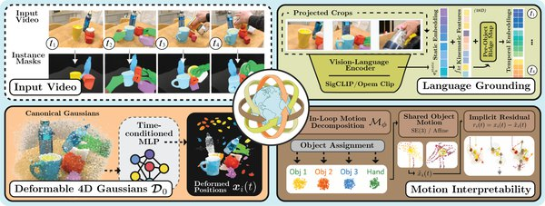

4D Synchronized Fields: Motion-Language Gaussian Splatting for Temporal Scene Understanding

In one sentence. A 4D Gaussian splatting representation that learns object-factored motion during reconstruction and synchronizes language to the resulting kinematics, enabling open-vocabulary queries over both objects and moments.
Abstract
Current 4D representations decouple geometry, motion, and semantics: reconstruction methods discard interpretable motion structure; language-grounded methods attach semantics after motion is learned, blind to how objects move; and motion-aware methods encode dynamics as opaque per-point residuals without object-level organization. We propose 4D Synchronized Fields, a 4D Gaussian representation that learns object-factored motion in-loop during reconstruction and synchronizes language to the resulting kinematics through a per-object conditioned field. Each Gaussian trajectory is decomposed into shared object motion plus an implicit residual, and a kinematic-conditioned ridge map predicts temporal semantic variation, yielding a single representation in which reconstruction, motion, and semantics are structurally coupled and enabling open-vocabulary temporal queries that retrieve both objects and moments. On HyperNeRF, 4D Synchronized Fields achieves 28.52 dB mean PSNR, the highest among all language-grounded and motion-aware baselines, within 1.5 dB of reconstruction-only methods. On targeted temporal-state retrieval, the kinematic-conditioned field attains 0.884 mean accuracy, 0.815 mean vIoU, and 0.733 mean tIoU, surpassing 4D LangSplat (0.620, 0.433, and 0.439 respectively) and LangSplat (0.415, 0.304, and 0.262). Ablation confirms that kinematic conditioning is the primary driver, accounting for +0.45 tIoU over a static-embedding-only baseline. 4D Synchronized Fields is the only method that jointly exposes interpretable motion primitives and temporally grounded language fields from a single trained representation. Code will be released.
This work was led by an undergraduate student in our lab whom I mentor; I contributed in an advisory role.
BibTeX
@article{barhdadi20264d,
title = {4D Synchronized Fields: Motion-Language Gaussian Splatting for Temporal Scene Understanding},
author = {Barhdadi, Mohamed Rayan and Abdaljalil, Samir and Khanbayov, Rasul and Serpedin, Erchin and Kurban, Hasan},
journal = {arXiv preprint arXiv:2603.14301},
year = {2026}
}